How to Read These Charts
Each scenario shows three charts side by side:
Yield Chart
Average wafer yield per customer. Bars colored by die area. The yield penalty for large-die products is directly visible here.
Test Floor Load
Test equipment utilization per customer line. Red dashed line = 100% capacity. Bars above this line indicate a test bottleneck that delays shipments.
D₀ Path
The simulated defect density over every wafer processed that month. The RVH fingerprint — roughness, memory, and excursion spikes — is visible in the shape of this path. Dashed line = baseline mean D₀.
Customers: A = 40% capacity, 125 mm² die · N = 30%, 650 mm² die (or 850 mm² in Big-Chip) · DMA = 20%, 150 mm² die · Q = 10%, 130 mm² die
01 — Idealized Static Fab
Unrealistic best-case benchmark: defect density is perfectly flat, no process variation, no excursions. This scenario exists to establish a theoretical ceiling. In practice, no fab achieves a flat D₀ path — but the idealized result shows what the physics of yield allow at baseline D₀ = 0.12.
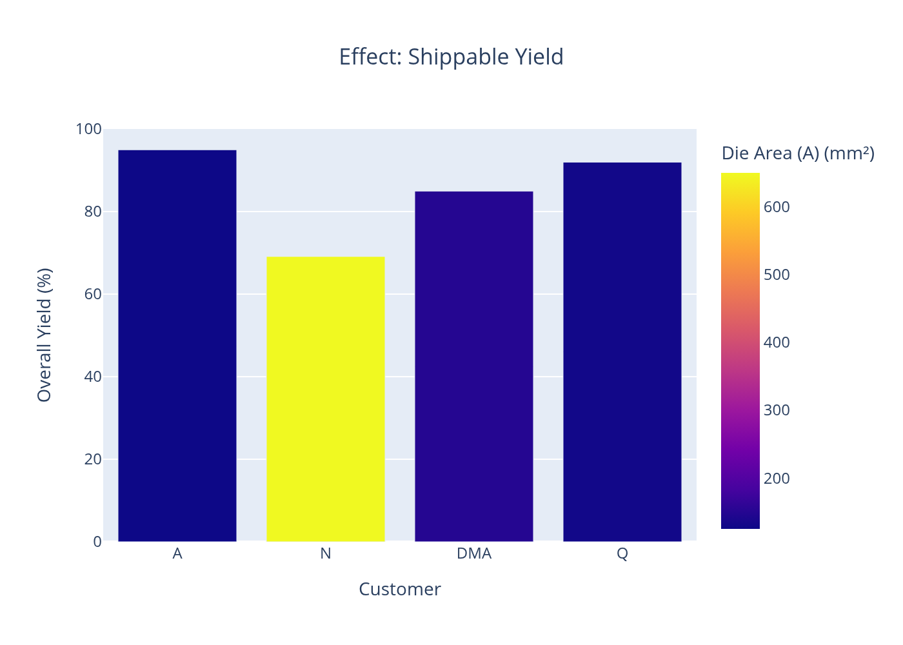


02 — Static Baseline
A standard static model with light random noise but no RVH structure — the kind of model most yield engineers actually run. D₀ fluctuates mildly around the mean. This is the straw-man that RVH is designed to outperform when process instability is present.

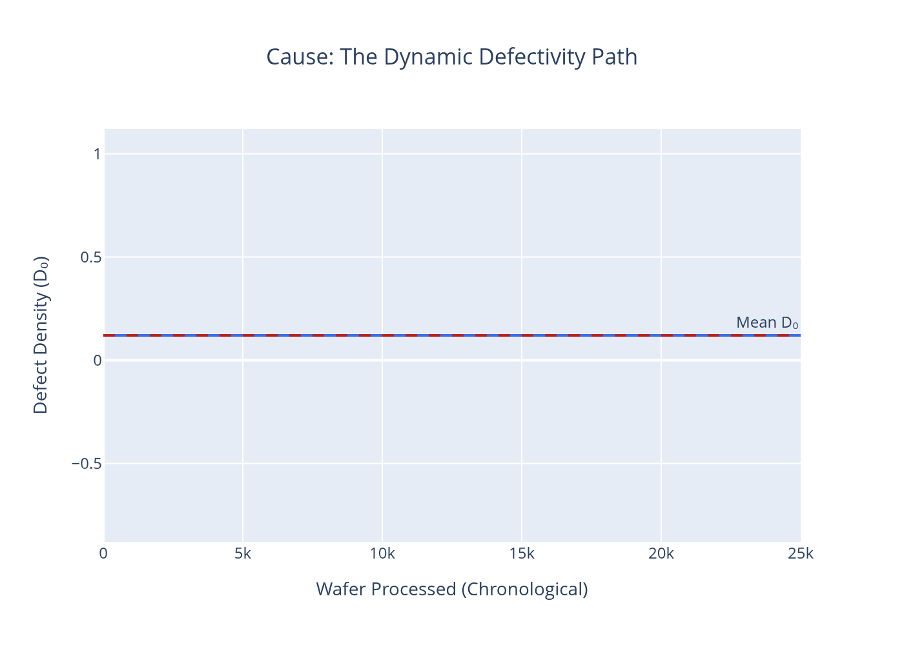
03 — Baseline Operation
A well-run real fab: low Hurst exponent, low process volatility, rare and mild excursions. This is the practical operating target. Yields are high for smaller chips. The D₀ path is rough but contained — the signature of a controlled process with normal tool-to-tool variation and occasional minor upsets.
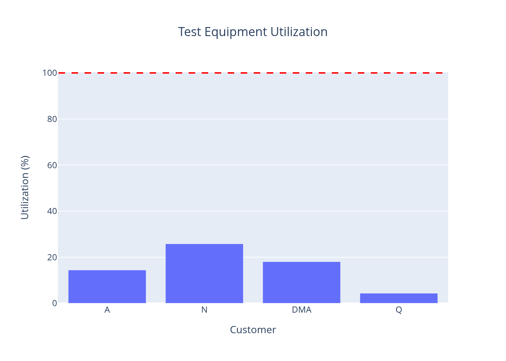
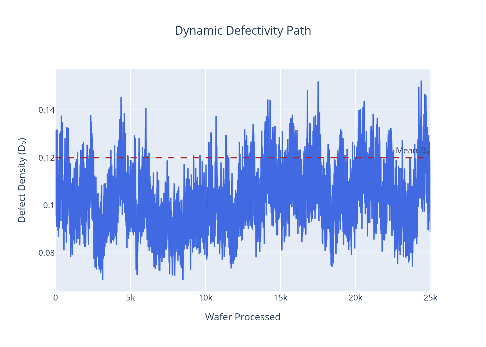
04 — Stable Fab with Low Volatility
Full RVH model, calm regime: Hurst exponent near 0.45, very low process volatility, no excursions. The D₀ path has slight roughness and memory but no major deviations. This is the RVH equivalent of a well-controlled fab — and the reference point for measuring the true cost of instability in Scenario 06.

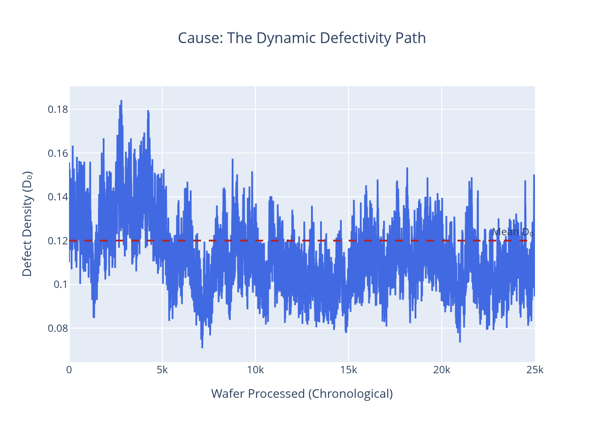
05 — Big Chip Yield Challenge
Stable fab, standard product mix except customer N's die grows from 650 mm² to 850 mm². Fab stability is excellent — process volatility is unchanged. What changes is physics: a larger die is a larger target for random defects. This scenario isolates product complexity as a cause of yield loss, independent of process instability.
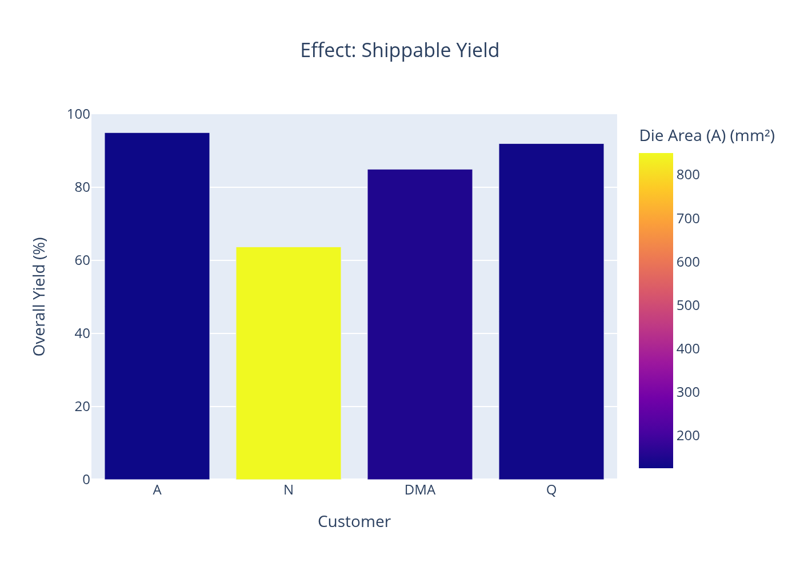
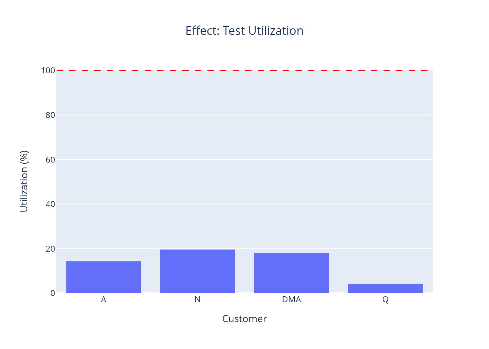
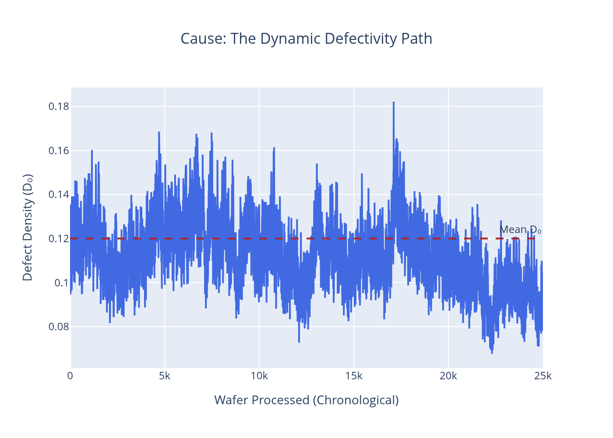
Result: Customer N yield falls to 63.7%. Shippable dies drop to 353,511. The D₀ path is unchanged — the process is clean. Only the die area changed.
06 — Unstable Fab Risk
Full RVH storm regime: low Hurst exponent (H = 0.10), high process volatility (ν = 1.0), frequent excursions (30% daily probability, 10× impact multiplier). The D₀ path is chaotic — large persistent swings with sudden spikes. This is the scenario that makes the RVH framing matter: no static model can reproduce or predict this output from the mean alone.
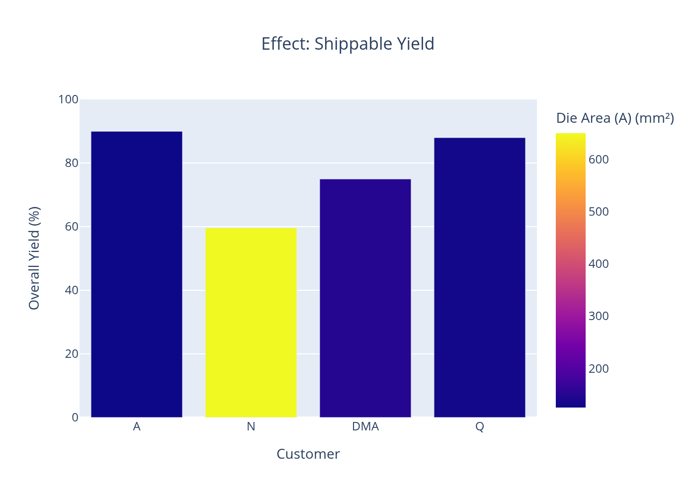
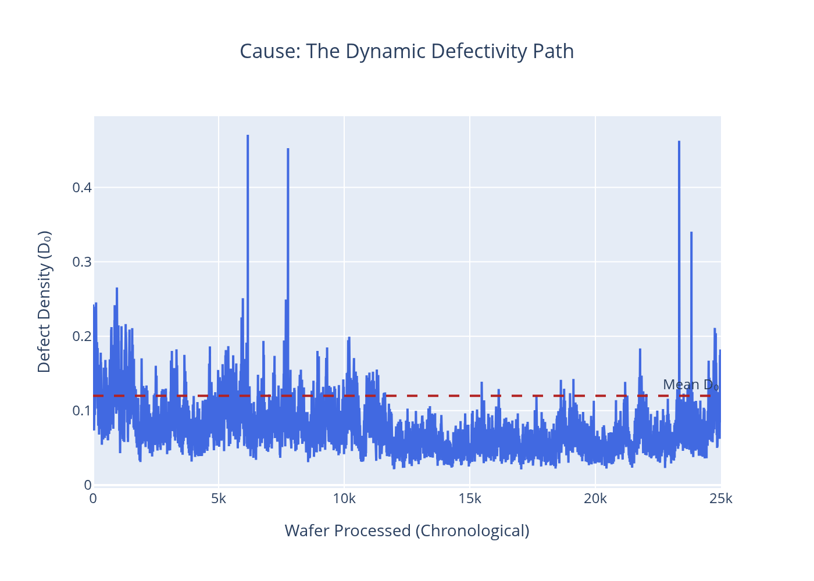
Result: A → 90.0% · N → 59.6% · DMA → 75.0% · Q → 88.0%. Instability damages all customers simultaneously. It is not a localized nuisance — it is a plant-wide operational risk.
Summary Impact Chart
Scenario-by-scenario yield and output comparison across all customers. The step from stable to unstable is the dominant economic event — larger than any individual product or process parameter change.
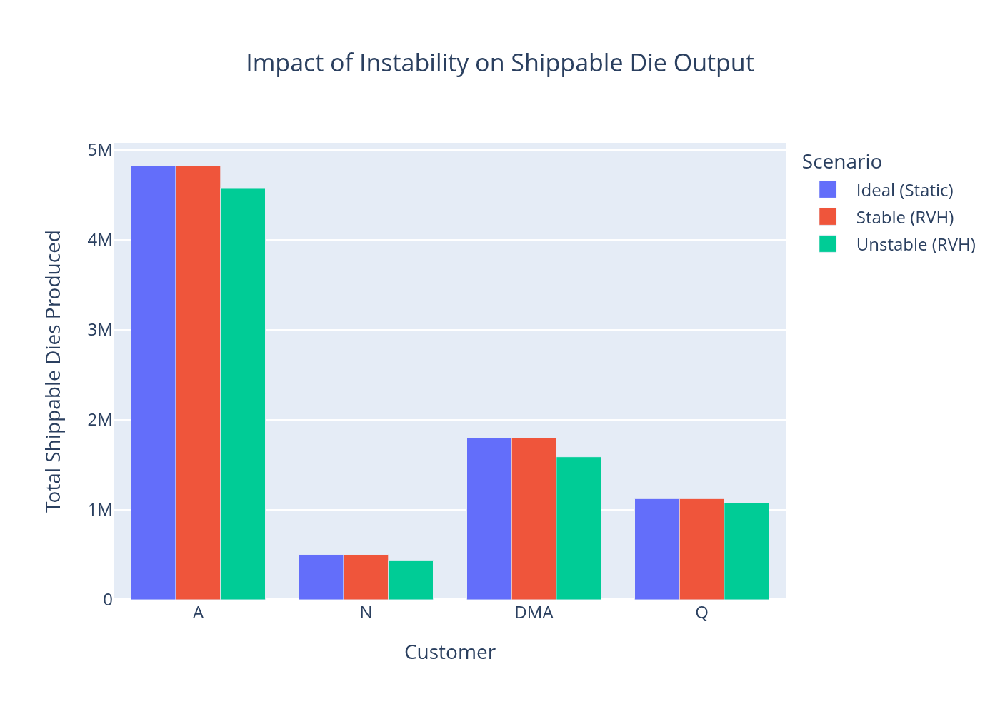
Why the Path-Based Model Matters
Static Models Are Blind to Excursions
A static model with D₀ = 0.12 predicts the same yield whether the fab holds steady or swings between 0.04 and 1.20. The average is the same. The output is not.
Instability Has a Legible Dollar Cost
RVH makes the 7.1% loss calculable and attributable. A fab running 25,000 wafers/month with 1,500 dies/wafer loses ~2.7 million good dies per month in the unstable regime.
Cause Attribution Becomes Possible
Die area (Scenario 05) and process instability (Scenario 06) produce different yield signatures. They are separable — and require different remediation strategies.
The Hurst Exponent Is the Key Diagnostic
H controls memory. A rough, low-H process stays bad longer after an excursion. Monitoring H in real fab data gives early warning that the process has entered a persistent bad state.